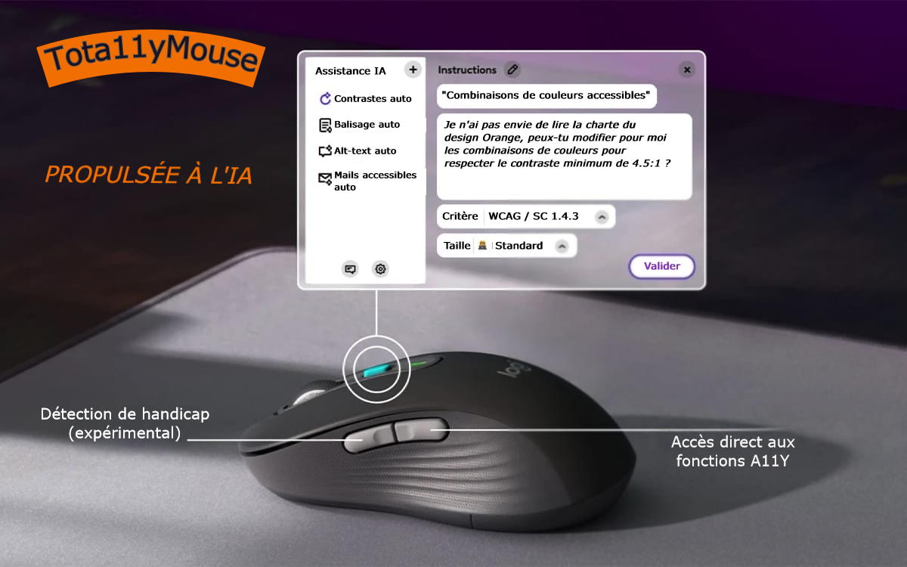

Tota11yMouse
Thématiques associées :- Web
Date de parution
Introduction #
Il y a quelques semaines, Orange a annoncé un partenariat avec Mistral AI pour accélérer le développement de l'Intelligence Artificielle (IA) en Europe.
Dans le domaine de l'accessibilité, la communauté d'experts est formelle : l'IA va révolutionner nos métiers et les sites web seront, sans nul doute, 100 % accessibles d'ici 2 ou 3 ans (voir les liens à la fin de l'article).
Aujourd'hui, il est temps pour nous de vous dévoiler une innovation : depuis des mois et dans le plus grand secret, le Centre d'Expertise en Accessibilité Numérique et les ergonomes de XDLAB ont mis au point une souris "propulsée à l'IA" pour accompagner les designers et développeurs d'Orange à créer des produits et services Web accessibles, sans avoir les connaissances nécessaires.
Nous vous présentons Tota11yMouse, la souris du futur !
Quelle est cette innovation en détails ? #
Visuellement, on pourrait penser que c'est une souris comme une autre, mais l'innovation réside dans ses raccourcis directs aux fonctions d'accessibilité depuis les boutons latéraux, mais également dans sa capacité à détecter les déficiences de l'utilisateur.

Accès direct aux fonctionnalités d'accessibilité #
Un bouton latéral permet d'activer les fonctions d'accessibilité sur l'élément ciblé par le pointeur de souris.
Plus besoin de passer des heures à chercher la balise HTML ou l'attribut adéquat, la détection est automatique en fonction du contexte de la page et des éléments entourant le composant.
Par exemple, une étiquette de formulaire sera automatiquement rattachée à son champ de formulaire grâce à la balise label et à l'attribut for pointant sur l'identifiant du champ de saisie.
Outre le balisage sémantique, il sera également possible de corriger le contraste de couleurs des textes de manière automatique.
Finis les textes en blanc sur fond orange (ou inversement) qui donnent un niveau de contraste insuffisant, même en utilisant le orange dit "accessible".
D'un simple clic, les textes passeront en noir pour permettre à tous les utilisateurs de lire confortablement.
Une autre innovation concerne la principale source d'erreurs sur les sites web, à savoir les alternatives aux images.
Grâce à cette souris, l'image sera automatiquement analysée par l'IA intégrée et une alternative pertinente sera fournie avec une fiabilité de 90 % (tests réalisés auprès d'un échantillon de 28 utilisateurs non-voyants).
Enfin, la rédaction de mails ou de documents PowerPoint étant une activité quotidienne chez Orange, nous avons également intégré l'inspecteur d'accessibilité de Microsoft directement dans les options de raccourcis, afin que vous n'ayez plus à chercher vous-mêmes le bouton "Vérifier l'accessibilité" présent dans le menu "Révision".
Innovation expérimentale #
Comme vous pouvez le voir sur l'image, un deuxième bouton latéral permettra d'aller encore plus loin dans l'aide aux utilisateurs, en détectant automatiquement le handicap auquel est confronté l'utilisateur.
Cette fonctionnalité est encore à l'état expérimental mais nous pouvons déjà vous en dévoiler les grands principes :
- la souris possèdera des micro-capteurs capables d'interpréter les moindres tremblements ou lenteurs de la main.
- la caméra du PC permettra d'analyser les yeux et les expressions du visage pour détecter une cécité ou des difficultés de compréhension et enverra les informations à la souris qui ajustera les réglages en conséquence.
Verbatims #
Voici quelques retours de nos bêta-testeurs :
La prise en main de la souris est agréable, je gagne un temps fou sur le développement des pages. Par contre, le pointeur de la souris est trop petit, du coup je dois faire de longs trajets et cela me fait mal au poignet.
Quand la souris détecte une image, la Tota11yMouse se met à vibrer. Une vibration longue indique que l'IA travaille sur la génération de l'alternative de l'image. Dès que c'est terminé, sur les haut-parleurs de l'ordinateur on peut entendre "Miaou, Miaou" qui annonce la vocalisation de l'alternative de l'image.
La sortie officielle, c'est pour quand ? #
Vous l'aurez compris, tout ceci n'est que pure fiction car l'intelligence artificielle ne permet pas, malgré ce que vous pourrez entendre, de rendre vos sites accessibles.
Pour que les sites web et applications mobiles d'Orange soient conformes aux exigences d'accessibilité (RGAA ou WCAG), la seule méthode reconnue à ce jour est :
- se former,
- suivre les standards et nos recommandations,
- tester ses livrables, notamment à l'aide de nos checklists "incontournables" disponibles pour Web, Android, iOS et documentation,
- mettre en place des tests utilisateurs.
Quelques ressources #
Des réflexions intéressantes sur le sujet :